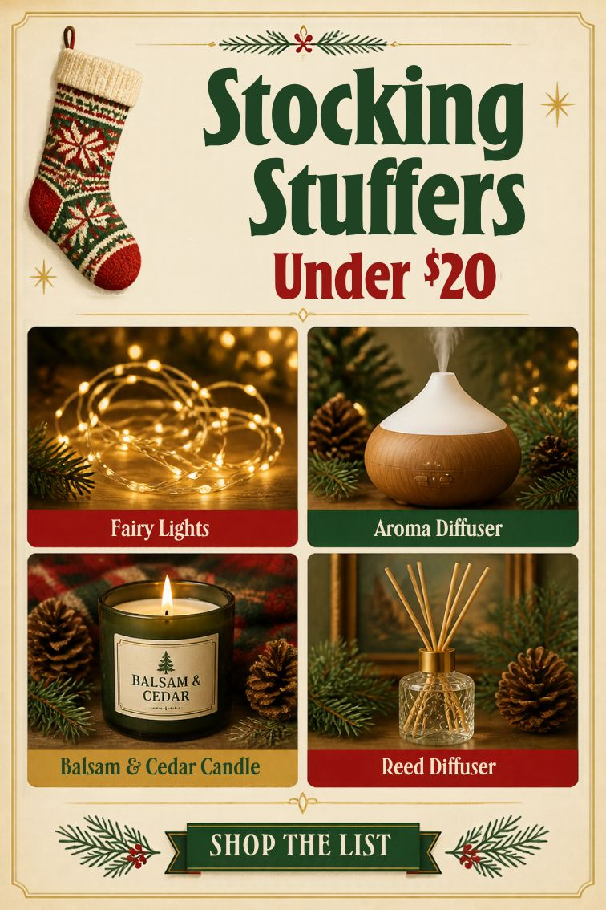

As an Amazon Associate I earn from qualifying purchases. This post contains affiliate links; learn more.
Stocking Stuffers Under $20 for Home Lovers

Stocking stuffers are harder than big gifts. They have to be small, cheap, and still feel like a treat, not just filler. The best ones are little upgrades to everyday life that people rarely buy for themselves.
These picks are all under $20 at the time of writing and work for anyone who loves their home: parents, roommates, in-laws, the friend who already has everything. They also double as Secret Santa and white elephant gifts that people will actually fight over.
1. Fairy lights, the stocking stuffer everyone uses
A set of Minetom Fairy Lights folds down small enough to fit in a stocking, and it's useful all year. Most people put them up for Christmas and then keep them on a headboard, a bookshelf, or a balcony railing long after the tree comes down.
Idea: tuck the lights into a small mason jar with a ribbon around the lid. That's a lantern and a gift in one.
2. A mini diffuser for the desk
The InnoGear Diffuser is small, quiet, and simple to use. Fill it with water and a few drops of oil, then press one button. It's perfect for a home office, dorm room, or nightstand. The soft color-changing light makes it a gentle nightlight for kids' rooms, too.
It's slightly bigger than a typical stocking stuffer, so set it at the front of the stocking or under the tree with the rest of the stocking gifts.
3. A reed diffuser that looks like a little luxury
A Cocorrína Reed Diffuser feels like something from a boutique. The bottle is pretty, the reeds come in a neat bundle, and it scents a bathroom or small room for weeks with no effort. It's an especially good gift for someone who likes candles but doesn't like keeping an eye on a flame.
4. A two-tier lazy Susan for the practical one
Every family has the person who'd rather get something useful. For them, the Amazon Basics 2-Tier Lazy Susan is a surprisingly satisfying gift. It organizes spices, skincare, or cleaning supplies and fits into a cabinet in seconds. It won't fit inside a stocking, but it's a perfect "and one more thing" gift beside it.
5. A classic holiday candle
Candles are classic stocking stuffers for good reason. A Yankee Candle Balsam & Cedar brings the smell of a real Christmas tree into the room, and it's one of the most popular holiday scents for good reason. If the large jar is outside your budget, look for the smaller sizes on the same listing.
How to fill a stocking without overspending
A good stocking has a rhythm: one "main" item, two or three small useful things, and something to eat. Try this formula:
- Main item: fairy lights or a reed diffuser.
- Useful extras: fuzzy socks, a nice pen, lip balm, a small notebook.
- Treat: a chocolate orange, hot cocoa packets, or their favorite candy.
Put the main item in first so it sits at the bottom and becomes the last surprise. Put candy at the top, because people always reach in for that first.
Stocking stuffers for specific people
- For the college student: the mini diffuser. It's dorm-safe, unlike real candles.
- For Mom: the reed diffuser and a handwritten note.
- For the roommate: fairy lights for their room.
- For Dad, or the hard-to-shop-for: the lazy Susan. Practical people love practical gifts.
Order early
Small, cheap items tend to sell out or get slow shipping close to Christmas, so it's worth grabbing stocking stuffers in November. Lights and diffusers also make great teacher, neighbor, and mail-carrier gifts, so buy one or two extra to keep on hand for last-minute gifts.
The best stocking stuffers say "I thought about you" in a small way. Each one on this list does that and gets used well past December.